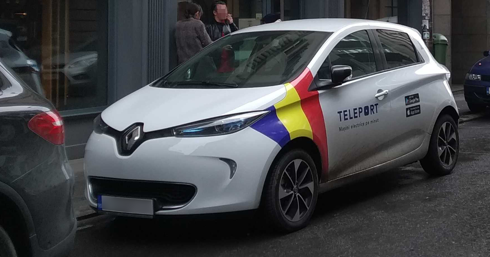
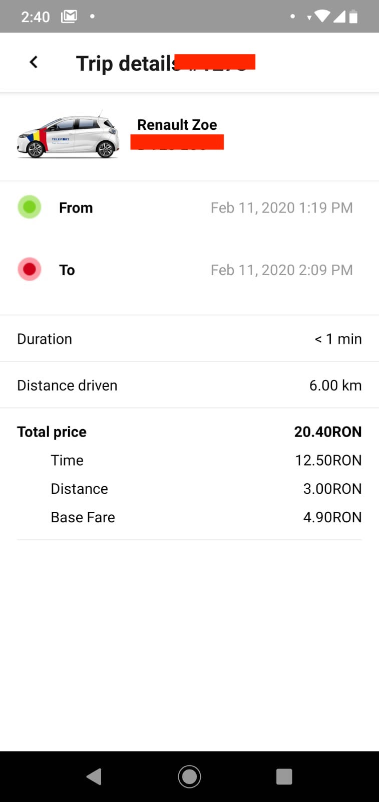

Am încercat Teleport, de ce este atât de tare carsharingul?
by Adrian Harabulă on 11 February, 2020

Am descoperit de curând serviciul de carsharing Teleport. De mai multe ori m-am lovit de problema că nu vreau neapărat să dețin o mașină personal, dar uneori am nevoie de una și deși am mai încercat diverse servicii de închiriere mașini niciunul nu m-a dat pe spate.
Cu ce se deosebește Teleport, e că alegi o mașină disponibilă din apropiere, pe care o deblochezi, cu telefonul!
Serviciul este 100% self-service așa că poți lua mașina oricând ai nevoie, 24/7. Dacă ai nevoie în timpul zilei, poți face o cerere și un valet o va livra la adresa menționată, gratuit. Cât de tare este asta? Toate sunt mașini electrice.
Hai să vedem ce e așa tare:
A durat cam mult drumul cu mașina, cam de 2 ori mai mult decât aș fi făcut cu metroul, dar recunosc, a fost mult mai confortabil și o să mă cam gândesc la asta de acum de fiecare dată când folosesc transportul public. Ca preț tot atât aș fi dat și pe Uber. Cam așa arată o cursă:

Mașinile pot fi luate pe oricât timp ai nevoie. Dacă depășești mai mult de 10h pe ceas cu mașina, adică dacă o returnezi oricând după 10-24h prețul e cel de 1 zi întreagă, 150lei.
Mașina poate fi luată și pe drumuri mai lungi, oriunde în România, singura condiție e să fie returnată în București în zona albastră (se vede din aplicație).
Zone unde poți încărca gratuit se găsesc pe PlugShare, mufa care te interesează este cea Type 2. Cu parcările nu prea mă pricep, dar majoritatea sunt gratuite, fiind mașină electrică. Pentru București, lista cu parcări disponibile este aici.
Suportul mi se pare de altfel excelent, este un live chat în aplicație, dar și pe site, tot timpul este cineva acolo să îți răspundă.
În spatele aplicației este o echipă de 6 ingineri români, majoritatea trecuți prin firme mari Google, Facebook, Twitter, Uber care au deja ceva ani experiență în domeniul carsharing.
Dacă ar merge mai departe aplicația, ar face deținerea unei mașini personale inutile...